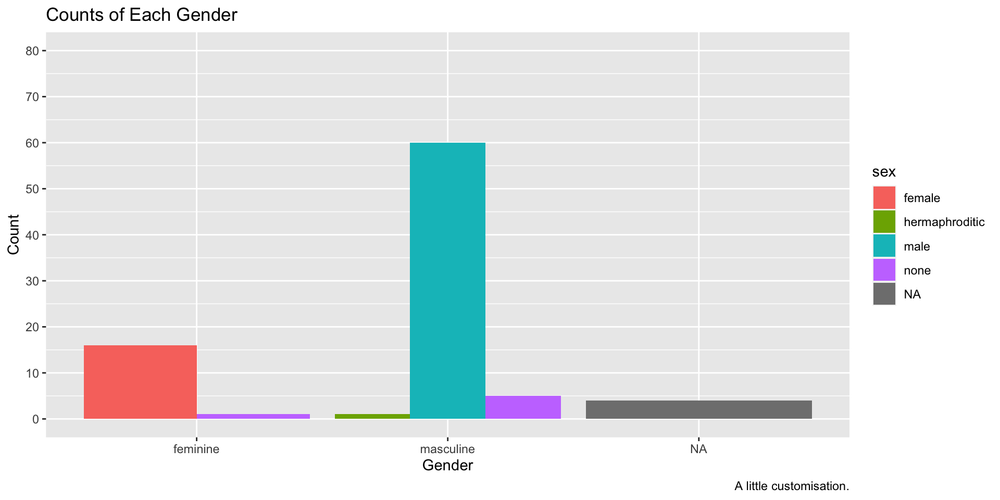

Creating Graphs
2023-03-06
Overview
Creating publication-ready data visualisations is a particular strength of R/ggplot2. We’ll cover today:
The grammar of graphics.
How to create a series of faceted sub–plots.
How to customise your plots with various themes, scales, labels, and other additional content.
How to combine plots quickly and easily using the
patchworkpackage.How to save your plots to file.
The Grammar of Graphics
In R, options were traditionally too low or too high level. ggplot2 is a good mix, with a consistent interface.
- Define a data set and map it to the canvas.
- Build up your plot layer by layer.
This relies on:
geoms: e.g., points on a scatter plot.aes: how you map elements of data to aesthetics.scale: self explanatory.annotations: Labels, we’ll use
labs().
Building a Plot, Layer by Layer
Let’s get some data to plot; starwars from dplyr.
Once loaded, we can load up the starwars data set from the dplyr library (one of the libraries loaded up when using library(tidyverse). Let’s take a look at it.
# A tibble: 87 × 14
name height mass hair_…¹ skin_…² eye_c…³ birth…⁴ sex gender homew…⁵
<chr> <int> <dbl> <chr> <chr> <chr> <dbl> <chr> <chr> <chr>
1 Luke Skywa… 172 77 blond fair blue 19 male mascu… Tatooi…
2 C-3PO 167 75 <NA> gold yellow 112 none mascu… Tatooi…
3 R2-D2 96 32 <NA> white,… red 33 none mascu… Naboo
4 Darth Vader 202 136 none white yellow 41.9 male mascu… Tatooi…
5 Leia Organa 150 49 brown light brown 19 fema… femin… Aldera…
6 Owen Lars 178 120 brown,… light blue 52 male mascu… Tatooi…
7 Beru White… 165 75 brown light blue 47 fema… femin… Tatooi…
8 R5-D4 97 32 <NA> white,… red NA none mascu… Tatooi…
9 Biggs Dark… 183 84 black light brown 24 male mascu… Tatooi…
10 Obi-Wan Ke… 182 77 auburn… fair blue-g… 57 male mascu… Stewjon
# … with 77 more rows, 4 more variables: species <chr>, films <list>,
# vehicles <list>, starships <list>, and abbreviated variable names
# ¹hair_color, ²skin_color, ³eye_color, ⁴birth_year, ⁵homeworldBuilding the Plot
Let’s build our plot up, one layer at a time. Every plot made in ggplot2 must define the dataset within the ggplot() function.

Adding Geoms
We need to add a layer to the plot. We do this with geoms, e.g. geom_point().
But, this won’t work:
Why? We haven’t said how to map the data onto the geom.
Adding Geoms
Because we need to set the aesthetics:
We have a plot, and 28 rows in our data with missing values…and an outlier!
Aesthetics
For geom_point() we need x and y. But we can add more.
Coordinates
We can tackle outliers in two ways:
- Filter out the outlier prior to plotting the data. We’ll cover this in Transforming Data.
- Change the coordinates of the plot to only include a limited range.
We’ll go with the latter option for now.
Coordinates
coord_cartesian() allows us to define limits on the x and y axis, hiding data. This is different to scale_x_continuous() which removes it.
Coordinates
Over-writing Aesthetics
if you define colour inside and outside aes, the outside one wins.
Fill
Colour and fill are different properties within ggplot2:
The colour of the circle varies, but the fill of the border is fixed.
Legends
With continuous values, legends get a gradient. Is that Yoda?
Geoms
Exploring Geoms
There are many geoms that you can use in ggplot2. Some common ones you might use are:
- bars (
geom_bar()) - boxes (
geom_boxplot()) - violins (
geom_violin()) - densities (
geom_density()) - histograms (
geom_histogram()).
Let’s briefly see how we might use each geom.
Bars
Bars are best used to indicate counts. Used as Means ± SE/95% CI they hide the full information on dispersion and are misleading in terms of estimating magnitude of effects.
Box plots
Box plots are a bit better:
Median, Interquartile range, whiskers are IQR + 1.5 times IQR, dots are outliers.
Violins
- Violin plots show you the density of the scores.
- We can have trimmed values or not.
- We can draw quantiles.
Histograms
Histograms show densities within bins.
Density Plots
- Density plots work like histograms but apply kernel smoothing to create a density line.
- A little easier to see general trends.
- We add transparency with alpha.

Smooths
We can add lines of best fit to data using a smooth with geom_smooth(). We have:
"lm": the linear model fitted usingstats::lm()."loess": locally estimated scatterplot smoothing fitted usingstats::loess(), fitting many local regressions within the series of data."gam": generalised additive model fitted usingmgcv::gam(), using a series of basis splines.
For our purposes, we’ll just rely on “lm” to draw a line of best fit through our data.
Smooths
Why use scale_x_continuous()? Cut out the big lad, Jabba the Hutt.
ggplot2 sets a default formula, but we can change it with, e.g. formula = log(y) ~ x.
Combining Geoms
We can easily combine geoms in ggplot2 by simply adding another layer to our plot.

Cutting Out the Repetition
We can add aesthetics to the initial ggplot() call to avoid repetition.
Customisation
Once we’ve created the elements of the plot using the default settings, we often want to customise it to better present some elements of the plot, or simply to make the plot our own.
Labels
The most basic way to do this is to first change the labels. To do this, we use the labs() function where we can specify various labels such as:
x: the label for the x-axis.y: the label for the y-axis.title: the title of the plot.caption: a caption in the bottom right of the plot.colour: the heading for the legend if picked out by colour.
Labels
Scales and Breaks
We can set our own scale, with our own limits.
Colours
Base colours are ugly and not colourblind-friendly. Use e.g. MetBrewer or hex codes to use nicer colours.
If we instead used colour to pick out the sexes here, we would have to change the function to scale_colour_manual().
Themes
The ggplot2 theme is iconic and easy to recognise. There are alternatives: theme_ functions.
ggplot(data = starwars, mapping = aes(x = gender, fill = sex)) +
geom_bar(position = "dodge") +
labs(
x = "Gender",
y = "Count",
title = "Counts of Each Gender",
caption = "A little customisation."
) +
scale_fill_manual(values = c(
"#efc86e",
"#97c684",
"#6f9969",
"#808fe1",
"#5c66a8"
)) +
theme_bw()Themes
Use theme() to make further edits. element_blank() removes stuff.
ggplot(data = starwars, mapping = aes(x = gender, fill = sex)) +
geom_bar(position = "dodge") +
labs(
x = "Gender",
y = "Count",
title = "Counts of Each Gender",
caption = "A little customisation."
) +
scale_fill_manual(values = c(
"#efc86e",
"#97c684",
"#6f9969",
"#808fe1",
"#5c66a8"
)) +
theme_bw() +
theme(
panel.grid.minor = element_blank(),
panel.grid.major.x = element_blank(),
axis.text = element_text(size = 16)
)Themes
Legend Position
Set the legend position manually:
ggplot(data = starwars, mapping = aes(x = gender, fill = sex)) +
geom_bar(position = "dodge") +
labs(
x = "Gender",
y = "Count",
title = "Counts of Each Gender",
caption = "A little customisation."
) +
scale_fill_manual(values = c(
"#efc86e",
"#97c684",
"#6f9969",
"#808fe1",
"#5c66a8"
)) +
theme_bw() +
theme(
panel.grid.minor = element_blank(),
panel.grid.major.x = element_blank(),
axis.text = element_text(size = 16),
legend.position = c(.90, .70)
)Legend Position
Legend Position
Or set it by pre-defined positions:
ggplot(data = starwars, mapping = aes(x = gender, fill = sex)) +
geom_bar(position = "dodge") +
labs(
x = "Gender",
y = "Count",
title = "Counts of Each Gender",
caption = "A little customisation."
) +
scale_fill_manual(values = c(
"#efc86e",
"#97c684",
"#6f9969",
"#808fe1",
"#5c66a8"
)) +
theme_bw() +
theme(
panel.grid.minor = element_blank(),
panel.grid.major.x = element_blank(),
axis.text = element_text(size = 16),
legend.position = "top"
)Legend Position
Facets
Facets
We can make sub-plots:
facet_wrap(): Letggplotfigure it out for you. Maximise use of plotting area.facet_grid(): Define the rows and columns manually.
Each have additional options for further control. See ?facet_wrap.
Facet Wrap
For facet_wrap(), define variables mapped onto columns using facet_grid(. ~ variable): dot is nothing in rows, next bit is variable on columns.

Facet Grid
For facet_grid(), it’s the same: facet_grid(rows ~ columns).
Combining Plots
Use patchwork for the easiest interface.
Make two plots. Assign them to objects:
Patchwork
Add them together to display side by side.
Complex layouts
Make another plot. Then we’ll plot all 3 together.
Complex layouts
- nesting with
() - new row with
/
Saving Plots
Use ggsave():
- file name goes first, including the file extension.
- object to save comes next.
Advanced Functionality
There’s a lot more we could look at like:
stat_summary()for calculating statistics (but we’ll do it manually later).- raincloud plots that show density, mean ± 95% CI, and raw data points.
- Adjusting placement of elements (jitter, dodge, etc.).
- Direct labels and annotation.
Exercises
Please complete the exercises at https://github.com/gpwilliams/ds-psych_course.